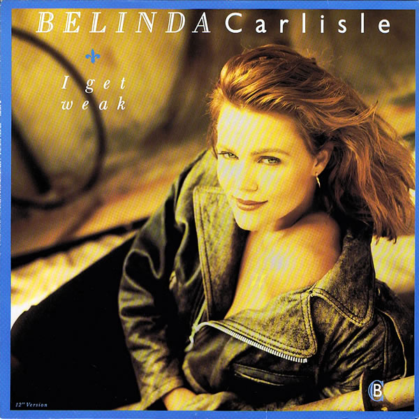

|  |
|
(Lyrics) When I'm with you I shake inside My heart's all tangled up My tongue is tied it's crazy Can't walk, can't talk, can't eat, can't sleep Oh, I'm in love, oh I'm in deep ''cause baby With a kiss you can strip me defenseless With a touch I completely lose control 'Til all that's left of my strength is a memory, wo... I get weak when I look at you Weak when we touch I can't speak when I look in your eyes I get weak when you're next to me Weak from this love I can't speak when I look in your eyes I get weak Convincing eyes, persuasive lips The helpless heart just can't resist their power You know you've got a hold over me You know you've got me where I want to be cause lover Like a wave you keep pulling me under How I'll ever get out of this I don't know I just know there's just no way to fight it, wo... I get weak when I look at you Weak when we touch I can't speak when I look in your eyes I get weak when you're next to me Weak from this love I'm in deep when I look in your eyes I get weak I get weak I get weak Just a kiss you can strip me defenseless Just a touch I completely lose control 'Til all that's left of my strength is a memory, wo... I get weak when I look at you Weak when we touch I can't speak when I look in your eyes I get weak when you're next to me Weak from this love I'm in deep when I look in your eyes I get weak I get weak I get weak |
(Letra en Español) Cuando estoy contigo Me sacudo por dentro Mi corazon esta todo enredado Mi lengua esta atada, es loco No puedo caminar, no puedo hablar, no puedo comer, no puedo dormir Oh estoy enamorada, o estoy profunda, porque cariño Con un beso puedes quitarme todas las defensas Con un toque pierdo completamente el control Hasta que todo se escapa de mis fuerzas es una memoria, wo... Yo me debilito cuando te miro Debil cuando nos tocamos no puedo hablar cuando te miro a los ojos Yo me debilito cuando estas junto a mi Debil por este amor No puedo hablar cuando te miro a los ojos Yo me debilito Ojos convincentes, labios persuasivos El corazon abandonado ya no puede resisitir su poder Sabes que tienes un agujero en mi Sabes que me tienes donde quiero estar, porque mi amor Como una ola me sigues empujando hacia abajo Como saldre de esto, no lo se Solo se que no hay manera de evitarlo, wo... Yo me debilito cuando te miro Debil cuando nos tocamos no puedo hablar cuando te miro a los ojos Yo me debilito cuando estas junto a mi Debil por este amor No puedo hablar cuando te miro a los ojos Yo me debilito Con un beso puedes quitarme todas las defensas Con un toque pierdo completamente el control Hasta que todo se escapa de mis fuerzas es una memoria, wo... Yo me debilito cuando te miro Debil cuando nos tocamos no puedo hablar cuando te miro a los ojos Yo me debilito cuando estas junto a mi Debil por este amor No puedo hablar cuando te miro a los ojos Yo me debilito Yo me debilito Yo me debilito |